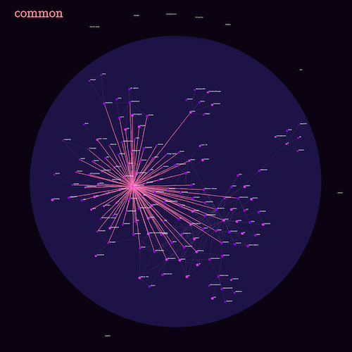

Common
What does it mean to build trust in play?
Common is an experimental video game for communities. It came out of a deep curiousity around decentralized networks of care and community trust.
I made Common for CAFKA, a contemporary art festival. Common was played by hundreds of people in the cities of Kitchener, Waterloo, and Cambridge over a month.

Common isn't the prettiest game I've worked on (that would be Soft Sanctuary or Mood Ring) or the most fun game I've ever worked on (that would be Closer). But it's my favourite game, it's the most experimental and ambitious, and it's the closest I've ever come to making a game that might expand what people imagine is possible.
How Common works
Common begins with a single player shining brightly in a vast nothingness. The player's life-force immediately begins decreasing, and they start to fade.
How to join Common
The only way a player can join Common is by meeting up with an existing player face-to-face. Both players must hold down the connective buttons at the same time until a connection is formed.

How to play
Once invited, a player can play online.
The player must caretake their connections. They can do this by sending life-force to connected players. This simple act increases the life-force of each player, of the connection between them, and of their larger network.
The player can also invite new players. Larger networks have the potential to provide more life-force for everyone, but they also mean more caretaking work.
The challenge
In Common, there is an environmental force deteriorating the life-force and connections of all players. If players stop reinforcing their connections, the connections decay and eventually split. Big groups break into smaller ones, and if nothing is done, an untethered player will eventually float out into the void alone.
Reaching different communities
I wanted to make sure that anyone who was curious would have an opportunity to join, even if they didn't know anyone currently playing. So I hung out in different public spaces for the entire month so anyone could come and find me and join the game.

What is interesting about Common?
- Common is a game for communities: It's more than a multiplayer game, it's an exploration of decentralized networks of care and community trust.
- Common is player-shaped and player-driven: The entirety of Common is shaped by the collective and individual decisions of the players.
- Common is a simulation: It is a game, but it's also an interactive simulation, an invitation for people to imagine different ways of coming together.
- Common doesn't prioritize fun: Common invites a kind of playfulness, but it doesn't prioritize fun, at least in the traditional sense of the word. It was designed to invite a specific kind of community connection.
- There are no enemies or death in Common: The only enemy is the slow decay brought on by time.
- You need to meet someone in person to join Common: The mandatory physical connection means that each player has some kind of personal connection to at least one other player.
- Players can carry each other in Common: Either person in a single connection can do the work of maintaining the connection, and the connection will last. The effort of the individual isn't important, what matters is the state of the relationship, no matter who did the work.
- Common is won collectively: A player's health is determined by the health of their relationships. The score/status is assigned to a player's entire network, incentivizing people to work in the interests of the whole group.

Concept
Common is an exploration of:
- Shared experience as a political act
- Community trust as something that is built through attention, care, and stewardship
- Communities as living entities, requiring continuous investment

Questions
Common began with a series of questions, that eventually became a very long list. I've included some of them below.
- what is trust?
- Is trust a choice? An action? A state?
- what is trust in the context of a community?
- can a community co-steward resources? Or is the tragedy of the commons an inevitability?
- What is the relationship between vulnerability and trust?
- What is betrayal? Is betrayal related to trust?
- What does trust have to do with the idea of private property?
- who is accountable for our shared environment?
- Who owns the underlying platforms of our realities? Who is accountable to these underlying platforms? Who stewards them?
- Is the tragedy of the Commons something that really happens? Is it inevitable?
- What is the relationship between distrust and “the individual actor”?
- What is the difference between individual trust transactions and communal trust networks?
- Why does most game theory seem to gloss over the most interesting parts of trust (holistically what is it, how do we grow it) in favour of the least interesting part (who acts, who “wins”)?
- What is the relationship between trust and control?
- Attention as labour, attention as value, attention as commodified labour?
- Do communities require continuous investment?
Inspiration / Readings / Playings
My research always involves looking to other games as well as a variety of other fields and projects.
Here are some of the games, art projects, installations, and ideas that inspired Common.
- Navigating & sharing: Closer, Bounden, Colorena, Friendstrap, To the sea, SIHEYU4N, FRU, Snipperclips, Fire Truck, ibb and obb, Zorya, slam city oracles, pico park, CLAPPER.
- Communication & Pressure: Space Team, Keep Talking and Nobody Explodes, Lovers in a Dangerous Spacetime, Dreadnought, Edison Escape Room, Marina Abramović (The Story Of Bow & Arrow), !Move or Die.
- Crowd Collaboration: Twitch plays Pokémon, Pong played by a crowd, Catch the Dragon’s Tail, New games movement, !overcooked, Hanabi, Team Pen & so on, !Deathmatch games.
- Community inspiration: r/place, masquerade, Nordic Larp, Immersive theatre; Pervasive games, Street games !farmville (specifically invite), !pyramid schemes (inverted: the wealth to the community), !airbnb (trust with strangers), StarColony2000X.
- Connection: The end of us.
- Decentralized Play: The Flock.
- Collabs: Bicycle Built for Two Thousand, Do not touch (esp stay in the green zone, like Tyranny of the rectangle), Checkboxes.
- Blockchain inspirations: Clickmine, TetzelCoin, The Ceremony.
- Small games for ease of interaction: dumb ways to die, known small games.
- Space/Place inspiration: Animal crossing, Lovely weather we’re having, Ingress, Pokémon Go, Alternate reality games.
- Flipping games: Spy game, Escher.
- Other: Blockchains, Leguin, St. Jude, Elizebeth Smith Friedman, !Libertarian trips, Fungus, mushrooms, spores, Suzanne Simard, ‘Will you be a good neighbour’?, Wild geese flight formation, My teacher flunked the planet, Slime Mould, “We are the guardians of this space once we enter” [noisebridge], bleed, contract & opt out ability), Design Patterns, immutability of blockchain vs. trust, surveillance, tracking, and erasure, Cypherpunks, Public and Private space, Friendships, third place, fourth world, fifth world, Prisoner’s Dilemma with communities, !The Evolution of Trust, xenofeminism, Lindsay Dobbin, Speculative fabulation, !Tulip Bulbs in Holland, Art intervention, Tend & befriend, Rhizome, Borges, Slow Games, Brain trust, doing/being/moving as a way of knowing, SF and fantasy, !Tinder (as a portal to connection), hyperlinks, Sarah Blaffer Hrdy (trust), Mind of My Mind, Richard Sennett, gifting & gratitude, Nonviolent communication, Hanabi, Inside a Star-filled Sky.
Tools:
I used D3 for visualizing the networks, p5.js for the connection screen, Firebase for real-time interactive multiplayer infrastructure, the database, and web hosting.
Process:
Common took nine leisurely months to design (I had other simultaneous projects), 90 agonizing days to build, and 30 magical days to play.
Early iterations of Common were playtested with beans and string and large groups of patient playtesters.
While researching I explored many fields: from historical interpretations of trust and "faith", to deep dives into decentralized organizing practices, to Game Theory. I even participated in a blockchain hackathon at the World Crypto Economic Forum when I was exploring decentralization.
Below is an early wireframe. If you are curious to read more detailed notes about screens (where I go through each screen that a player might see) or game components (where I list the proporties of different game elements) you can poke around in this private doc here.

What worked well with Common?
- Common was a direct realization of my original vision: It worked! I made what I wanted to make, which was delightful and surprising given how ambitious it was.
- Players understood how to play Common: A danger with experimental games is that people won't understand how to play them, but in this case, people of all ages and many different backgrounds understood how to play quickly and easily.
- Playtesting worked wonders: Common was playtested early and often throughout the process. My playtesters were varied, including people who love games, people who don't play games, and other game designers. I received invaluable feedback from the testers.
- Mentorship: Working with mentors amplified my ability by at least x3.
- Common had no major bugs: Certainly, there were small bugs, but there were no major incidents, which was amazing for my first real-time multiplayer, city-wide game that needed to run for an entire month.
- The huge diversity of players: Because of my journey around the cities over the month and a huge number of supportive partners, I had a wide variety of players, everyone from researchers at the Institute for Quantum Computing to children at a city library.
- The player response was delightful Some players were delighted, describing it as "unlike anything else they'd ever played." Other players were mystified and curious, describing it as "not really a game" which I usually interpret as praise if they like it anyway.
Challenges/What I would change
Common was the most conceptually, creatively, and technically challenging project I have ever worked on. There are several things I'd do differently if I could start again.
- More polish: Common could have used more visual polish. I didn't get to the visual polish stage in time, and the game has an underwhelming aesthetic.
- More weight on engagement: I wanted it to be a slow, low-stress, community experience, but I also wanted to keep people engaged. If I were to start again, I'd move the balance slightly more towards engagement.
- Less time paper prototyping: For this specific project, I'd spend less time with paper/physical prototyping, and jump into making a code prototype faster. It wasn't very useful to prototype with string and beans because this is a game about invisible connections and relations.
- Engaging with the general public every day for a month was a lot: In the future, I'd look for more helpers with public outreach.
- Blockchain: In early research, I wanted to build Common on a blockchain because Common is an exploration of *decentralized* community care. I spent a lot of time and energy learning how to make apps on the Etherium blockchain before deciding that it wasn't the right choice for Common. I wish I had realized this sooner.
- Better framing of expectations: I didn't design Common with fun as the priority, but it's still hard when people keep waiting for adrenaline and action because of the word "game".
- Paid developer help: I'd hire a developer that I could collaborate with, freeing up more of my time for design. For a project this ambitious it was too much work to do it all myself.
Community and Collaborators
Mentorship
Common was the first game where I actively sought out mentors. Tiffany Conroy mentored me on everything related to the frontend development, Sarah Friend talked me through decentralized networks, and Eiríkr Åsheim and Aaron Levin helped me with a lot of the backend development.
The help of these incredible engineers and professionals made it possible to make a huge project in a short amount of time. One notable takeaway from the mentorship was learning how differently my mentors approached debugging and problem-solving.
Curatorial Relationship
Common was the first project where I was working with an active and deeply involved curator. Gordon Hatt came to Berlin to meet with me and discuss the conceptual design and continued to be involved throughout the design process. He also served as an intermediary between myself and the board of the festival, who also had input and questions about the project. It was helpful to have someone who was equally invested in the project, but bridging the gap between contemporary art and experimental videos was sometimes a challenge.
Collaborator and testers
My projects always involve a large number of formal and informal research conversations as well as large numbers of playtesters. I like to keep a list of everyone who has contributed, to honour their contributions and also remind myself of the communities that shape my work. Common would have been completely different without the contributions of the following people:
Aaartgames Berlin, Aaron Levin, Adam Streck, Aileen House, Albert Alexander, Amar Shah, Baris, Brie Code, Claudio Sampaio, Colleen, Colin Fisher, Colin Parsons, Connor Bell, Christian Kokott, David H, Dorice Tepley, Ed Ashton, Enric, Eiríkr Åsheim, Eric Rubin, Eric Thurston, Exile, Gemma, Gordon Hatt, Holly, Hugh D. A. Goldring, Ida Toft, Isabella Stefanescu, James Beardmore, Jan van der Lugt, Jasmin Woeller, Jessica, Julian Hansen, Justine Lera, Jury Rossetti, CAFKA, Kat Dornian, Kristina Taylor, Jay Taylor, Civic Tech WR, Linsey, Lorenzo, Lucas, MADE (and the game developers there), Mailis Rodrigues, Mariam Zakarian, Mike Daoust, Mike Mintz, Mitchell Chan, Muriel Thi, Niall Lavigne, Nomi, Norna Ross, Owen Pallett, Rachel, Rahul Jethwani, S Friend, Seungji Ha, School of Machines, Making & Make-Believe, Shayna, Six, Steven Taschuk, Steven Tu, Sulyn Cedar, TAG, Taeyoon Choi, Tengig, Tiffany Conroy, Troy, Yaxi Zhao, Yoshi, and scribblegrl
Summary
Common explores the nature of community trust through play. For an entire month, anyone in the city of Kitchener-Waterloo could join the virtual game but only by connecting with someone in person. At its core, Common was an experiential game that helped a city reimagine connection and community trust.
My process to create Common involved research, prototyping, and real-time co-creation with the general public in a city. At a high level, my process with Common involved extensive discovery research, multiple design rounds resulting in prototypes, a collaborative development cycle where we brought the ideas from prototypes to code; and finally, a deployment where we launched Common as part of an arts festival and co-created the experience with participants.
My key insight from Common is that community trust is built by people showing up for each other repeatedly over time. Also, the unsurprising lesson that trust is harder to demonstrate and build online. Common was an ambitious, time-bounded exploration of trust. The lessons I learned from Common continue to shape my design practices today.
Questions?
Thanks for making it all the way down here! If you have any questions about my process, please do reach out to me at marieflanagan@gmail.com.